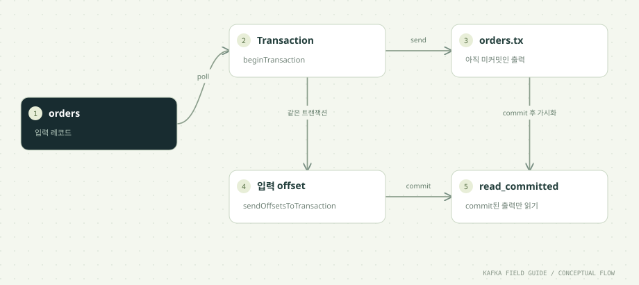

이 단원을 마치면
- commit/abort와 read_committed를 비교한다
- 입력 offset과 출력의 원자성을 구현한다
- Exactly Once를 외부 DB까지 일반화하지 않는다
01 / UNDERSTAND먼저, 원리를 이해합니다.
여러 쓰기의 원자성을 제공합니다
트랜잭션 Producer는 여러 토픽·파티션에 대한 쓰기를 함께 commit하거나 abort할 수 있습니다. downstream이 read_committed일 때 abort된 레코드를 업무 데이터로 읽지 않습니다. read_uncommitted에서는 abort된 레코드도 보일 수 있습니다.
읽기 → 처리 → 쓰기를 묶습니다
입력을 읽고 결과를 보낸 뒤 sendOffsetsToTransaction으로 입력 Consumer Group의 다음 offset을 같은 트랜잭션에 포함합니다. 결과만 기록되고 입력 복구 위치는 남지 않는 분리를 제어하는 패턴입니다. 여기에는 일반 commitSync를 섞지 않습니다.
트랜잭션 ID와 오류 처리가 중요합니다
동시에 실행되는 Producer마다 transactional.id가 달라야 합니다. 같은 논리적 인스턴스의 재시작에는 안정된 ID를 사용하여 이전 세션을 fencing할 수 있습니다. commit timeout은 성공 여부가 불명확하므로 무조건 abort하면 안 됩니다. 이 예제는 오류를 상위로 전달하고 종료합니다.
Exactly Once의 경계를 말해야 합니다
Kafka 입력 offset과 Kafka 출력의 처리 결과를 묶는 보장입니다. HTTP 호출, 문자 발송, 별도 DB 커밋을 자동으로 포함하지 않습니다. 동일 업무 이벤트를 애플리케이션이 두 번 발행한 경우도 별도의 중복 방지가 필요합니다.
Abort 후 로컬 소비 위치를 주의합니다
abort는 Consumer의 로컬 position을 자동으로 되돌리지 않습니다. 계속 poll하려면 seek 또는 재생성으로 복구 위치를 맞춰야 합니다. 학습 코드는 처리 실패 시 abort 후 종료하여 재시작 때 커밋된 위치를 사용합니다. 열린 트랜잭션은 read_committed 가시성도 지연시킬 수 있습니다.
02 / FOLLOW THE EVENT데이터의 이동을 따라갑니다.


원리를 이해하기 위한 단계 모델입니다. 네트워크 시간이나 장애 판정을 재현하지 않습니다.
기록되었다고 바로 보이지는 않습니다
설명용 메모리 모델입니다. 실제 Kafka 동작은 아래 실습에서 확인합니다.
03 / READ THE CODE현업 패턴을 코드로 읽습니다.
아래 코드는 함께 제공된 실행 소스에서 발췌했습니다. 전체 클래스와 설정은 소스 파일에서 확인할 수 있습니다.
producer.beginTransaction();
try {
for (var record : records) {
OrderEvent event = OrderEvent.parse(record.value());
producer.send(new ProducerRecord<>("orders.tx",event.orderId(),event.json()));
}
// Output and input offsets participate in ONE Kafka transaction.
producer.sendOffsetsToTransaction(records.nextOffsets(),consumer.groupMetadata());
} catch (ProducerFencedException | InvalidProducerEpochException | OutOfOrderSequenceException | AuthorizationException fatal) {
throw fatal; // Close and exit. This producer cannot continue safely.
} catch (Exception processingFailure) {
producer.abortTransaction();
// Exit: continuing without seek would skip aborted input locally.
throw processingFailure;
}
// Keep commit outside the abort catch. A timeout has an uncertain outcome.
producer.commitTransaction();소스: 고급/src/main/java/study/kafka/TransactionLab.java · 48행부터
- records.nextOffsets()는 poll 배치 전체를 처리한 후 사용합니다. 이 코드는 배치 전체를 트랜잭션에 넣으므로 안전한 완료 범위입니다.
- 치명적인 fencing·권한 오류는 Producer를 재사용하지 않고 종료합니다. commit은 abort catch 밖에 두어 불확실한 결과를 함부로 취소하지 않습니다.
- tx-process의 max는 배치 경계에서 확인하므로 지정 수보다 조금 더 처리할 수 있습니다. 다운스트림 Consumer에는 read_committed를 지정합니다.
04 / MAKE IT REAL이제, 직접 확인합니다.
PowerShell에서 저장소 루트로 이동한 뒤 실행하세요. 01단원의 up → build → init이 선행되어야 합니다. 종료된 환경은 up으로 다시 시작합니다. 이후 단원의 max=0은 입력이 끊긴 뒤 25초까지 읽습니다. 대응 실습 안내 파일 ↗
01. 취소된 레코드
.\실습\study.ps1 run tx-produce abort tx-aborted-demoTRANSACTION ABORT가 출력됩니다.
02. 확정된 레코드
.\실습\study.ps1 run tx-produce commit tx-committed-demoTRANSACTION COMMIT이 출력됩니다.
03. 격리 수준 비교 A
.\실습\study.ps1 run consumer tx-view-all 0 orders.tx 0 read_uncommitted두 종류의 트랜잭션 레코드가 보입니다. Consumer는 제어 레코드는 반환하지 않습니다.
04. 격리 수준 비교 B
.\실습\study.ps1 run consumer tx-view-committed 0 orders.tx 0 read_committedabort된 tx-aborted-demo는 보이지 않습니다.
05. Kafka → Kafka 처리
.\실습\study.ps1 run tx-process tx-pipeline-day09 12TX_COMMITTED와 배치 처리 수가 출력됩니다.
한 걸음 더 실험하기
- 두 tx-process를 같은 기본 transactional.id로 동시에 실행해 fencing이 왜 필요한지 조사하세요. 실제 다중 실행은 TX_ID를 인스턴스별로 설정해야 합니다.
- 일반 DB 쓰기를 추가하면 보장 범위가 왜 달라지는지 그림에 별도 경계를 그려 보세요.
05 / CHECK YOUR UNDERSTANDING설명할 수 있으면, 내 지식입니다.
sendOffsetsToTransaction이 묶는 대상은?
원리를 읽고 실습 결과를 확인했나요?
학습 기록은 이 브라우저에만 저장됩니다.